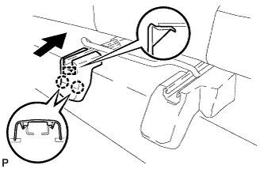

ЗАДНЕЕ СИДЕНЬЕ № 1 В СБОРЕ (для моделей с раздельным сиденьем типа 60/40 с функцией облегчения посадки "Walk In" с левой стороны) > УСТАНОВКА |
| 1. УСТАНОВИТЕ ЛЕВОЕ ЗАДНЕЕ СИДЕНЬЕ В СБОРЕ |
Установите сиденье в салон.
Подсоедините замок центрального ремня безопасности заднего сиденья к сиденью.
Временно установите сиденье и закрепите его 5 болтами и гайкой.
Затягивайте болты и гайку в порядке, показанном на рисунке.
| 2. УСТАНОВИТЕ ЛЕВЫЙ ЩИТОК НАПРАВЛЯЮЩЕЙ СИДЕНЬЯ |
Установите крышку и введите в зацепление 3 фиксатора.
| 3. УСТАНОВИТЕ ЩИТОК КРОНШТЕЙНА ВНУТРЕННЕЙ НАПРАВЛЯЮЩЕЙ ЛЕВОГО СИДЕНЬЯ |
Установите крышку и введите в зацепление 6 фиксатора.
| 4. УСТАНОВИТЕ ЗАДНИЙ ЩИТОК КРОНШТЕЙНА НАРУЖНОЙ НАПРАВЛЯЮЩЕЙ СИДЕНЬЯ |
Переместите щиток в направлении, указанном на рисунке стрелкой, чтобы ввести в зацепление 2 направляющие.
Введите в зацепление 2 захвата, чтобы закрепить щиток.
| 5. УСТАНОВИТЕ ЗАДНИЙ ЩИТОК КРОНШТЕЙНА ВНУТРЕННЕЙ НАПРАВЛЯЮЩЕЙ СИДЕНЬЯ |
|  |
Введите в зацепление 2 захвата и направляющую, чтобы установить крышку.
| 6. УСТАНОВИТЕ ПОДГОЛОВНИК ЗАДНЕГО СИДЕНЬЯ В СБОРЕ |
Установите подголовник.